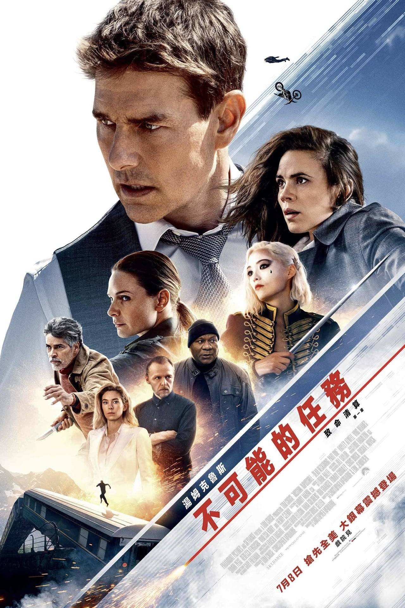
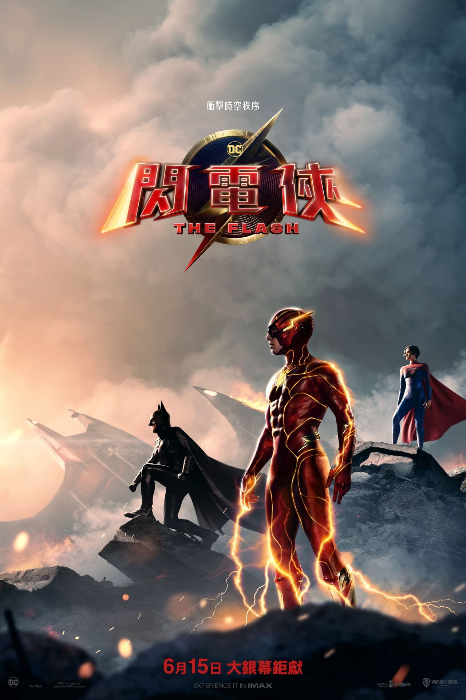
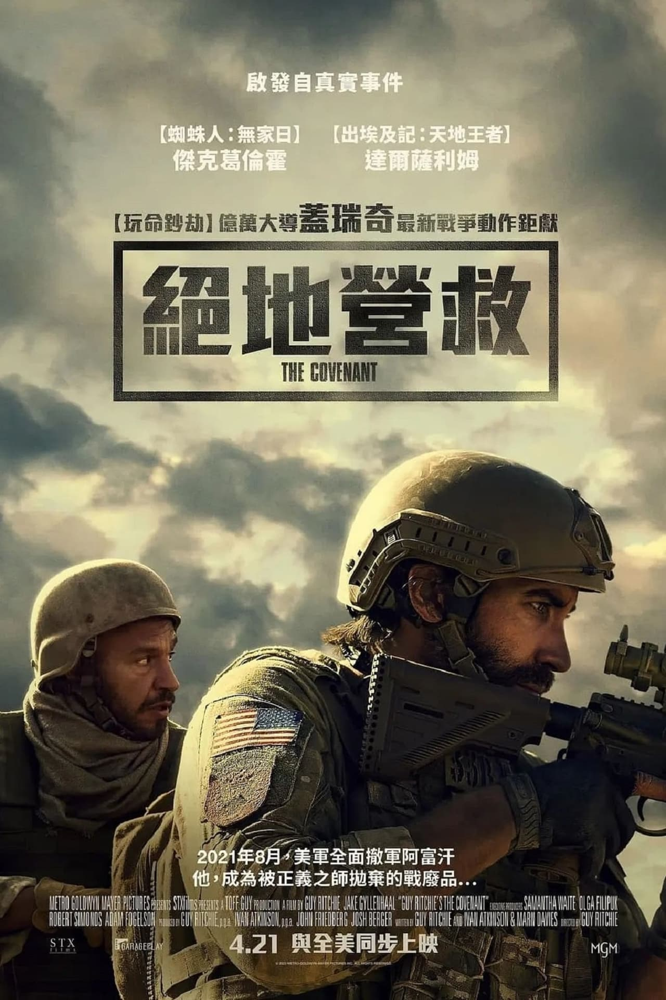
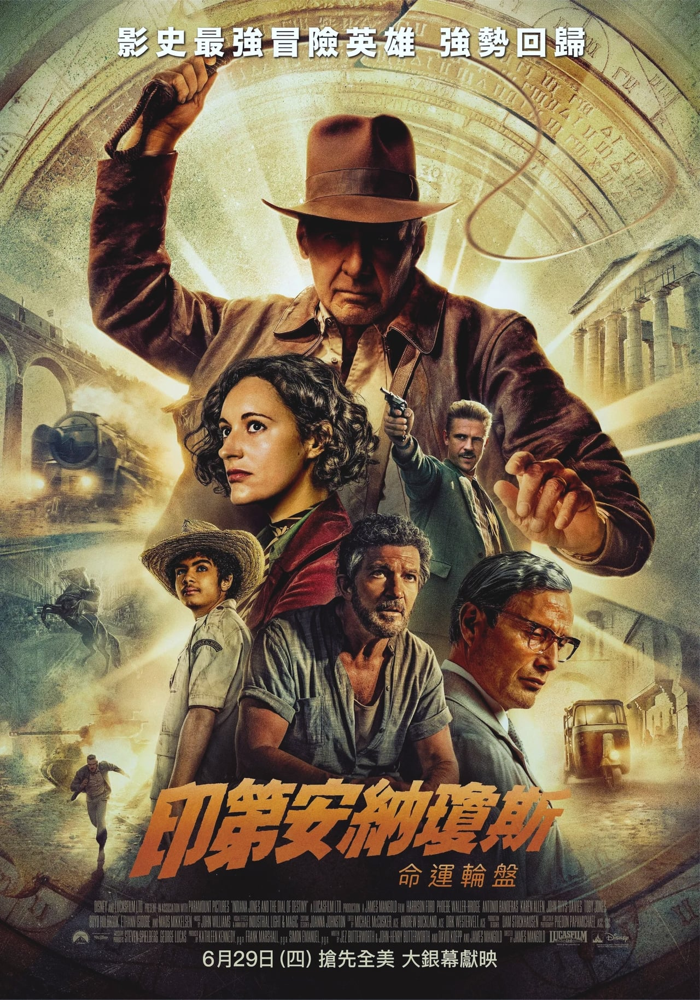
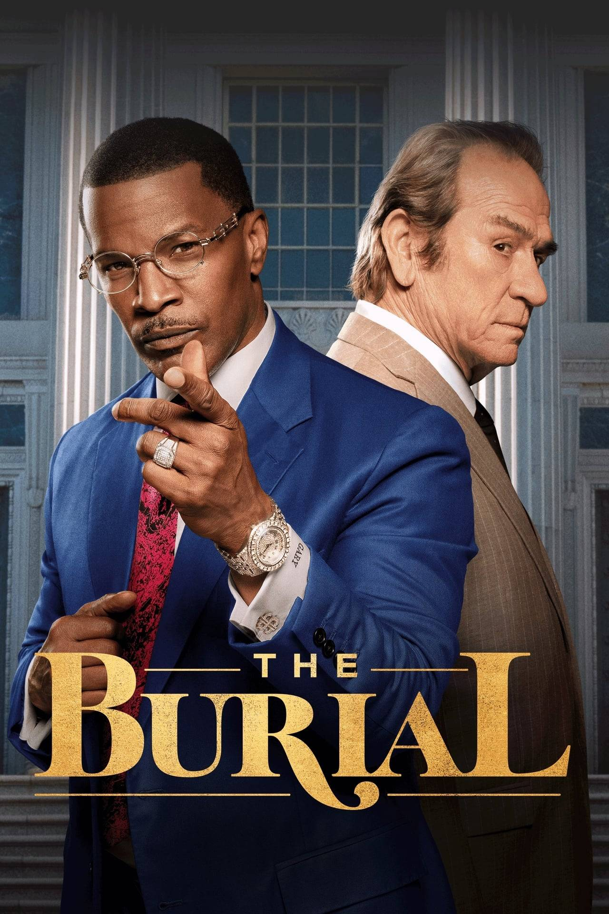
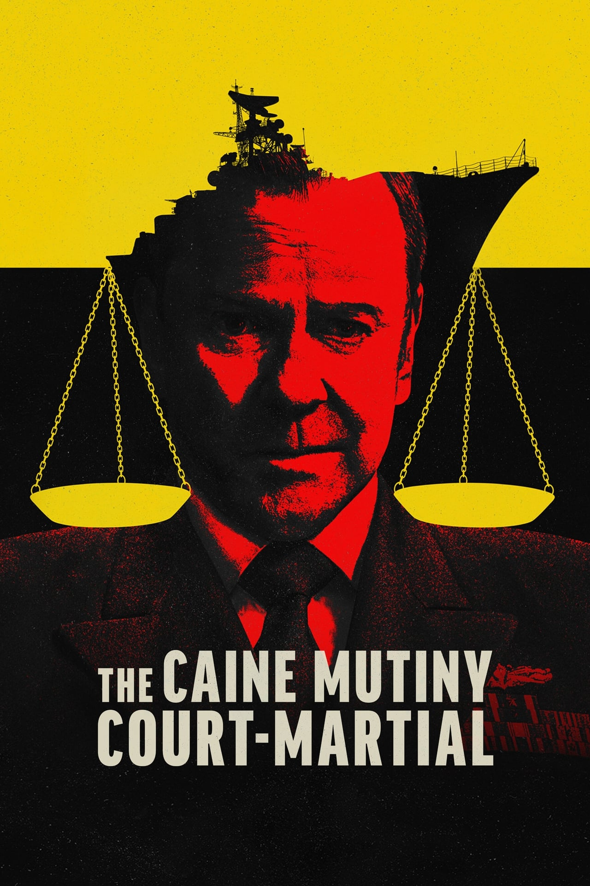
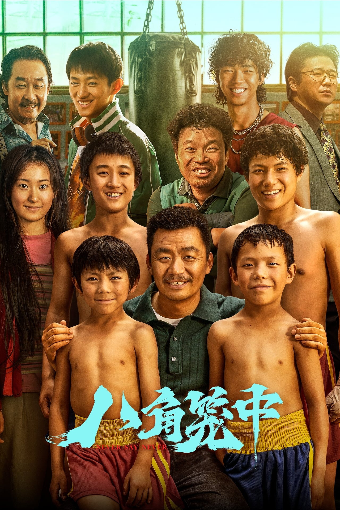

碟中谍7：致命清算（上）
7.713Overview:
特工伊森·亨特（汤姆·克鲁斯 饰）和他的IMF小组将开启迄今为止最危险的一次任务：追踪一种会危及全人类性命的新型武器，并阻止其落入坏人之手。与此同时，伊森曾对抗过的黑暗势力也正在卷土重来，整个世界的命运岌岌可危。面对神秘而强大的敌人，他不得不面对选择使命还是至爱的终极抉择。
复仇狗联盟
7.5Overview:
该片讲述被遗弃的小狗雷吉和其他流浪狗联手报复前主人的故事。

闪电侠
6.861Overview:
自从成为正义联盟中的一员，闪电侠巴里（埃兹拉·米勒 Ezra Miller 饰）便成为一个日夜忙碌的超级英雄。可是虽然他已经具备了拯救世人的非凡能力，却依旧对自己既定的命运束手无策。父亲弑妻案（朗·里维斯顿 Ron Livingston 饰）复审在即，关键证据又无法有效 佐证。由于之前对战荒原狼时曾短暂超越光速穿越时空，巴里不顾蝙蝠侠（迈克尔·基顿 Michael Keaton 饰）的劝阻，一路穿越到母亲遇害的那一天。他原本以为通过不起眼的小动作能够拯救母亲，却不曾想宇宙因为这个意外转折而发生蝴蝶效应。当巴里回到自己变成闪电侠的前夕，他发现父母健康快乐的生活，而海王、钢骨、戴安娜等超级战士似乎缺席了这个时代。更糟糕的是，追杀超人的佐德将军（迈克尔·珊农 Michael Shannon 饰）降临地球，他将在毫无阻碍的情况下毁灭世界……失踪顺序
6.871Overview:
故事发生在冬天的挪威，沉默内敛又辛勤工作的尼尔斯负责驾驶马力强劲的除雪车清理道路，保持通往他所居住的冰原小镇的山路入口畅通。他的工作受到大家的肯定，就在他刚刚被评为年度市民时，他却接到噩耗——他的儿子死于海洛因过量。尼尔斯拒绝接受关于儿子之死的官方解释，他开始秘密寻找杀害他儿子的嫌疑凶手。一个意外的 事件转变使得他成为了令人闻风丧胆的地下英雄，而他的身份却无人知晓。

盟约
7.806Overview:
美军中士约翰·金利（杰克·吉伦哈尔 饰）最后一次在阿富汗执行任务，和当地翻译艾哈迈德一起调查该地区。他们的部队在巡逻中遭到伏击，两人成为唯一的幸存者，在敌人的追击下，艾哈迈德冒着生命危险带着受伤的金利穿过数英里的岖崎地形到达安全地带。回到美国本土后，金利得知艾哈迈德和其家人并没有像承诺的那样获准前往美国，他决心保护这个朋友并报恩，重回战区在当地民兵到达之前救出艾哈迈德一家。

夺宝奇兵5：命运转盘
6.676Overview:
见证无数奇观的印第安纳·琼斯（哈里森·福特 Harrison Ford 饰），将探寻毕生追求的宝物，与新老搭档一起，直面命运终章。

埋葬
7.339Overview:
根据真实事件改编，当握手交易失败时，殡仪馆老板耶利米·奥基夫邀请魅力十足的律师威利·加里来拯救他的家族企业。在这个鼓舞人心、充满胜利喜悦的故事中，这对不可能的搭档在揭露企业腐败和种族不公的同时，经历一番吵吵闹闹后，结下深厚的友谊。

凯恩舰哗变
6.4Overview:
影片根据获普利策获奖的同名小说改编而成，讲述了一位陆军上尉的军事法庭审理事件，严格说来这已经是一次真正意义上的叛变，依照军规“在特殊情况下，可以不经上级批准解除舰长的指挥权”，在凯恩号军舰因奇格舰长的错误指挥而面临沉船危险的时候，他原本忠心耿耿的副手马克当机立断接管了军舰，马克也因此和支持他的同僚受到了严格的军事审判，他的律师如果想拯救他，唯一的办法就是证明奇格军官精神失常，无法很好地控制船舰。
封神第一部：朝歌风云
7.4Overview:
《封神第一部：朝歌风云》是由乌尔善执导，费翔、李雪健、黄渤、娜然、于适、陈牧驰、此沙、武亚凡、夏雨、袁泉、王洛勇、侯雯元、黄曦彦、李昀锐、杨玏、陈坤出演的奇幻古装电影 ，于2023年7月20日在中国大陆上映。 讲述商王殷寿与狐妖妲己勾结，暴虐无道，引发天谴。昆仑仙人姜子牙携“封神榜”下山，寻找天下共主，以救苍生。西伯侯之子姬发逐渐发现殷寿的本来面目，反出朝歌。
